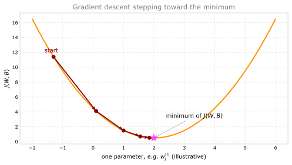

import numpy as np
import tensorflow as tf
from tensorflow.keras.models import Sequential
from tensorflow.keras.layers import Dense
import logging
logging.getLogger("tensorflow").setLevel(logging.ERROR)
tf.autograph.set_verbosity(0)
model = Sequential([
tf.keras.Input(shape=(400,)),
Dense(units=25, activation="sigmoid"),
Dense(units=15, activation="sigmoid"),
Dense(units=1, activation="sigmoid"),
])Training Neural Networks
machine-learning
neural-networks
The three-step TensorFlow pattern for training a neural network, specify the model, compile it with a loss function, and fit it to data.
Everything up to this point covered inference, using an already-trained network to make predictions. This page starts training, actually searching for good values of \(\vec{w}\) and \(b\) for every neuron, using a labeled training set, instead of assuming those numbers are already known.
Same Architecture, New Question
The running example is still handwritten digit recognition, telling 0s and 1s apart, using the same architecture introduced earlier, an input \(\vec{x}\) (the image), a first hidden layer with 25 units, a second hidden layer with 15 units, and one output unit.
Given a training set of images \(\vec{x}\) and ground-truth labels \(y\), how do you actually train this network’s parameters? TensorFlow code for doing exactly that follows a 3-step pattern. The next few pages dive into what each step is really doing underneath. This page just introduces the pattern itself.
Review Questions
1. What is the difference between inference and training, in terms of what this page covers versus the earlier pages?
TipAnswer
The earlier pages covered inference, using an already-trained network to predict. This page starts training, finding the parameters from a labeled dataset.
Step 1: Specify the Model
The first step is nothing new, exactly the same Sequential and Dense pattern already used to build this network for inference.
This step only describes the network’s shape, how many layers, how many units, which activation function, the same architecture information used for inference on the TensorFlow Implementation page. It does not yet say anything about what makes one set of weights better than another. That is what steps 2 and 3 are for.
Step 2: Compile the Model
Training means searching for values of \(\vec{w}\) and \(b\) that make the network’s predictions match the real labels as closely as possible. To search for “as closely as possible,” the computer needs that idea turned into an actual number, one that is large when predictions are bad and small when predictions are good. That number is called a loss, and a loss function is the formula that computes it. This is the exact same idea as the cost function you already used to train logistic regression back in Course 1, just under its TensorFlow name.
The second step, model.compile, is where you tell TensorFlow which loss function to use. For this binary classification problem (0 or 1), that loss function is called binary crossentropy, TensorFlow’s name for the exact same log loss (also called cross-entropy loss) already covered on that Course 1 page. What that formula actually computes is covered again in more depth on the next page. For now, the important part is simply that naming a loss function here is what gives TensorFlow something concrete to try to make smaller during training.
model.compile(loss=tf.keras.losses.BinaryCrossentropy())Review Questions
1. What is the one essential piece of information model.compile needs?
TipAnswer
The loss function, a way of measuring how wrong the model’s current predictions are.
1. “Binary crossentropy” is a new name, but is it a genuinely new idea?
TipAnswer
No. It is TensorFlow’s name for the same log loss (cross-entropy loss) already used to train logistic regression in Course 1.
1. model.compile(loss=BinaryCrossentropy()) was used in the code above. For which type of task would you use the binary crossentropy loss function?
BinaryCrossentropy()should not be used for any task.Binary classification (classification with exactly 2 classes)
A classification task that has 3 or more classes (categories)
Regression tasks (tasks that predict a number)
TipAnswer
b. Binary crossentropy is for binary classification, exactly 2 classes, like telling 0s and 1s apart. A 3-or-more class problem or a regression problem each need a different loss function.
Step 3: Fit the Model
The third step, model.fit, tells TensorFlow to actually fit the model from step 1, using the loss from step 2, to the training data \(X\) and \(Y\).
X = np.load("../../../media/digits-0-1-X.npy")
Y = np.load("../../../media/digits-0-1-y.npy")
history = model.fit(X, Y, epochs=20, verbose=0)
print("final loss:", history.history["loss"][-1])final loss: 0.009583968669176102epochs is the same idea as the number of steps of gradient descent to run, back from Course 1. One epoch means one full pass through the training data, adjusting the parameters a little each time to reduce the loss.
Review Questions
1. What does the epochs argument to model.fit control?
TipAnswer
How many passes through the training data the learning algorithm runs, the same idea as the number of steps of gradient descent from Course 1.
1. Given model = Sequential([...]), model.compile(loss=BinaryCrossentropy()), and model.fit(X, y, epochs=100), which line updates the network parameters in order to reduce the cost?
model = Sequential([...])model.compile(loss=BinaryCrossentropy())None of the above, this code does not update the network parameters.
model.fit(X, y, epochs=100)
TipAnswer
d. model.fit is the step that actually runs gradient descent, updating the parameters over and over to reduce the cost. Sequential only defines the architecture, and compile only names the loss function, neither one touches the parameter values.
1. Put the three steps in order: (a) model.fit(X, Y, epochs=...), (b) build the Sequential model, (c) model.compile(loss=...).
TipAnswer
(b) specify the model, then (c) compile it with a loss function, then (a) fit it to the data.
Recap: The Same Three Steps as Logistic Regression
Before looking at steps 2 and 3 in more depth, it helps to see where they came from. Training a logistic regression model back in Course 1 followed the exact same three steps, just written in plain NumPy instead of TensorFlow.
Step 1 specifies how to compute the output given the input \(\vec{x}\) and parameters \(\vec{w}\) and \(b\), \(f_{\vec{w},b}(\vec{x}) = g(\vec{w} \cdot \vec{x} + b)\).
# logistic regression
z = np.dot(w, x) + b
f_x = 1 / (1 + np.exp(-z))# neural network
model = Sequential([
Dense(...),
Dense(...),
Dense(...),
])Step 2 specifies a loss function and a cost function, a way to measure how well one set of parameters fits the training data.
# logistic regression
loss = -y * np.log(f_x) - (1 - y) * np.log(1 - f_x)# neural network
model.compile(loss=BinaryCrossentropy())Step 3 trains on the data to minimize that cost function with gradient descent, updating \(\vec{w}\) and \(b\) a little on every iteration.
# logistic regression
w = w - alpha * dj_dw
b = b - alpha * dj_db# neural network
model.fit(X, y, epochs=100)The code blocks above are the general pattern, the same shape shown on the lecture slide. The executed code earlier on this page uses the real digit dataset and epochs=20, a specific instance of this exact same step 3. Training a neural network in TensorFlow follows the exact same three steps as logistic regression, just under different names, Sequential for step 1, model.compile for step 2, model.fit for step 3. The rest of this page looks at what steps 2 and 3 are really doing.
Review Questions
1. Which Course 1 model do the three TensorFlow steps on this page mirror?
TipAnswer
Logistic regression. Specify the output function, specify a loss and cost function, then minimize that cost with gradient descent, the same three steps, just applied to a neural network.
The Cost Function for a Neural Network
Step 2 for logistic regression specified the log loss, the loss on a single training example,
\[ \mathcal{L}\big(f(\vec{x}), y\big) = -y \log\big(f(\vec{x})\big) - (1 - y)\log\big(1 - f(\vec{x})\big) \]
For the handwritten digit problem, telling 0s and 1s apart, a neural network uses this exact same formula. The only thing that changes is what \(f(\vec{x})\) means. For logistic regression, \(f(\vec{x})\) was \(g(\vec{w}\cdot\vec{x}+b)\). For a neural network, \(f(\vec{x})\) is whatever the output unit computes after forward propagation runs through every layer.
Averaging that loss over all \(m\) training examples gives the cost function
\[ J(W, B) = \frac{1}{m}\sum_{i=1}^{m} \mathcal{L}\big(f(\vec{x}^{(i)}), y^{(i)}\big) \]
\(W\) (capital) stands for every weight in every layer of the network together, \(W^{[1]}\), \(W^{[2]}\), and \(W^{[3]}\) for the three-layer digit network. \(B\) (capital) stands for every bias the same way, \(b^{[1]}\), \(b^{[2]}\), and \(b^{[3]}\) together. Minimizing \(J(W,B)\) means searching over every parameter in every layer at once. Because the output depends on all of \(W\) and \(B\), it is also written \(f(x)\) when the input is the focus, or \(f(w,b)\) when the parameters being searched over are the focus. Both refer to the same network output.
In TensorFlow, this loss is called binary crossentropy, the name already used in model.compile(loss=tf.keras.losses.BinaryCrossentropy()) above. Both halves of that name have a specific origin. In statistics, the formula above is called the cross-entropy loss function, that is where “crossentropy” comes from. Binary just points out that this is a binary classification problem, each image is either a 0 or a 1.
keras started out as its own library, developed independently of TensorFlow, before eventually merging into TensorFlow. That history is why the loss function lives under tf.keras.losses rather than directly under tf.
Review Questions
1. For a neural network’s cost function \(J(W,B)\), what does \(f(\vec{x})\) mean, compared to logistic regression?
TipAnswer
The loss formula is identical. What changes is \(f(\vec{x})\), for logistic regression it was \(g(\vec{w}\cdot\vec{x}+b)\), for a neural network it is the output unit’s activation after forward propagation through every layer.
1. In \(J(W,B)\), what do the capital letters \(W\) and \(B\) represent?
TipAnswer
All the parameters in the network, together. \(W\) is every weight across every layer (\(W^{[1]}, W^{[2]}, W^{[3]}\)), \(B\) is every bias across every layer (\(b^{[1]}, b^{[2]}, b^{[3]}\)).
1. Where does the name “binary crossentropy” come from?
TipAnswer
Crossentropy is the name of this loss formula in statistics. Binary points out that this is a binary classification problem, the label is only 0 or 1.
Different Loss for Regression Problems
Everything so far assumes a classification problem, telling 0s and 1s apart. If a network solved a regression problem instead, predicting a number rather than a category, binary crossentropy would not be the right loss.
For a regression problem, one common choice is the same squared error idea used for linear regression back in Course 1, one half of the squared difference between the prediction and the true value,
\[ \mathcal{L}\big(f(\vec{x}), y\big) = \frac{1}{2}\big(f(\vec{x}) - y\big)^2 \]
In TensorFlow, this is set during compile with a different loss function, MeanSquaredError in place of BinaryCrossentropy:
model.compile(loss=tf.keras.losses.MeanSquaredError())The running example on this site, telling 0s and 1s apart, is a classification problem, so the rest of these pages stick with binary crossentropy. This section is here so the name MeanSquaredError is recognizable if a regression problem comes up elsewhere.
Review Questions
1. Why would BinaryCrossentropy be the wrong loss function for a regression problem?
TipAnswer
Binary crossentropy is built for a label that is only 0 or 1. A regression problem predicts a number, so it needs a different loss, like mean squared error.
Minimizing the Cost with Gradient Descent
Step 3 for logistic regression ran gradient descent to minimize \(J(\vec{w}, b)\). The same idea applies to a neural network, just now searching over every parameter in every layer at once. For every layer \(l\) and every unit \(j\) in that layer, gradient descent repeatedly updates
\[ w_j^{[l]} \leftarrow w_j^{[l]} - \alpha \frac{\partial}{\partial w_j^{[l]}} J(W, B) \]
and similarly for every bias,
\[ b_j^{[l]} \leftarrow b_j^{[l]} - \alpha \frac{\partial}{\partial b_j^{[l]}} J(W, B) \]
\(\alpha\) is the same learning rate from Course 1. After enough iterations, hopefully these updates settle on parameter values that make \(J(W,B)\) small.

Each arrow is one gradient descent update, \(w_j^{[l]} \leftarrow w_j^{[l]} - \alpha \frac{\partial}{\partial w_j^{[l]}} J(W, B)\), nudging that one parameter a little further down the slope. A real neural network updates every \(w_j^{[l]}\) and \(b_j^{[l]}\) this way at the same time, across every layer, not just one parameter in isolation as sketched here.
The one new difficulty is computing those partial derivative terms. A neural network can have thousands of parameters spread across several layers, so working out \(\frac{\partial J}{\partial w_j^{[l]}}\) for every one of them by hand is not practical. The standard algorithm for computing these derivatives efficiently is called backpropagation. TensorFlow implements backpropagation internally, inside model.fit. Calling model.fit(X, Y, epochs=100) runs backpropagation to compute every partial derivative, then uses gradient descent to update every parameter, for 100 epochs, without any of that showing up in the code you write.
Review Questions
1. In \(w_j^{[l]}\), what do \(l\) and \(j\) index?
TipAnswer
\(l\) is the layer, \(j\) is the unit within that layer. \(w_j^{[l]}\) is a weight belonging to unit \(j\) in layer \(l\).
1. What does model.fit use internally to compute the partial derivative terms needed for gradient descent?
TipAnswer
Backpropagation, an algorithm for efficiently computing every \(\frac{\partial J}{\partial w_j^{[l]}}\) and \(\frac{\partial J}{\partial b_j^{[l]}}\) across all the layers.
Why Understanding These Steps Matters
It is easy to call these three steps without really understanding what is happening underneath. When a learning algorithm does not work as expected, and it frequently does not on the first try, having a real conceptual picture of what compile and fit are actually doing is what makes debugging possible.
Relying on TensorFlow to handle backpropagation and gradient descent internally fits a broader pattern in the history of computing. Decades ago, programmers wrote their own sorting functions from scratch. Sorting libraries are mature enough now that most programmers call an existing sorting function instead, unless they are specifically practicing the algorithm as an exercise. The same is true of computing a square root, or multiplying two matrices together, pretty much everyone reaches for a library function rather than writing that code from scratch.
Deep learning has followed the same path. Early on, many people implementing neural networks wrote the forward propagation and gradient computations themselves. Today, libraries like TensorFlow and PyTorch have matured enough that most developers, including most commercial neural network implementations, use a library instead. Understanding what is happening underneath still matters, because when something unexpected happens, and it still does with today’s libraries, that understanding is what makes it possible to track down the problem.
The kind of network covered on these pages, layers of Dense units stacked one after another, also goes by another name, a multilayer perceptron.
Review Questions
1. Why does this page care about what compile and fit are doing underneath, rather than just showing the three lines of code?
TipAnswer
Understanding what is really happening makes it possible to debug a learning algorithm that is not working as expected, rather than just calling the code without knowing what to check.
1. Why do most developers today use a library like TensorFlow instead of implementing backpropagation from scratch?
TipAnswer
Neural network libraries have matured, the same way sorting libraries and square root functions matured long ago. Most developers now call a library rather than reimplementing it, though understanding the underlying steps still helps when something unexpected happens.
1. What is another name for a network built from layers of Dense units stacked one after another?
TipAnswer
A multilayer perceptron.